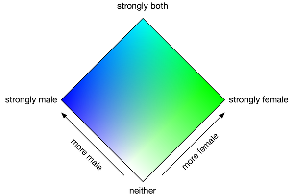

On the map below, click the point that best describes your gender in a furry context:

×
Female:
Male:
Values sent to server
(All these should be hidden inputs for the production version)
Male Value
Quantized Male Value
Female Value
Quantized Female Value